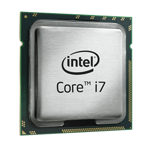

Matériel informatique
En anglais : hardware, est une pièce détachée d'un appareil informatique. Il s'agit d'un domaine important de l’informatique qui va de pair avec le logiciel (software ou firmware). Il peut y avoir des pièces situées à l'intérieur de l'appareil et qui sont indispensables à son fonctionnement, comme secondaires ou disposées à l'extérieur (les périphériques).
